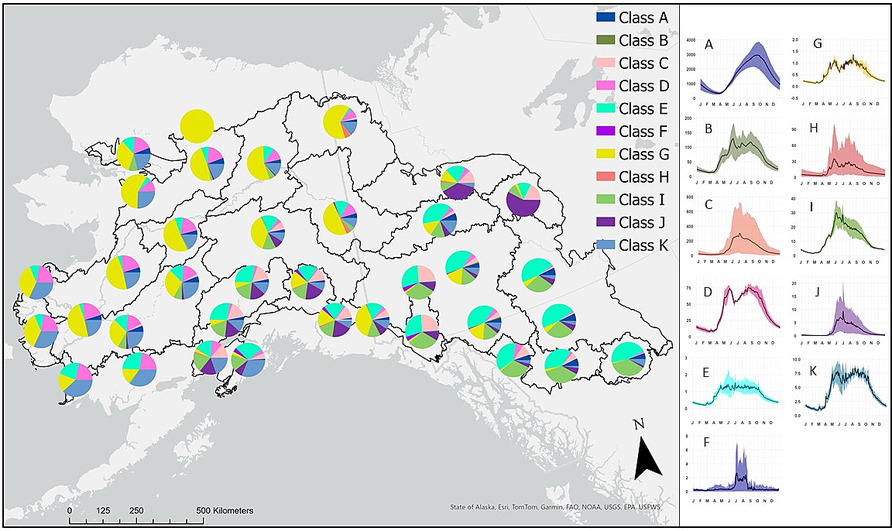
Strohm, D.D., Falke, J.A.,
Sergeant, C.J., and J.D. Paul. 2025.
Streamflow regime characterization in the changing boreal ecosystem:
wildfire impacts from stream-to-regional scales. Science of the
Total Environment 991 (2025) 179770 DOI
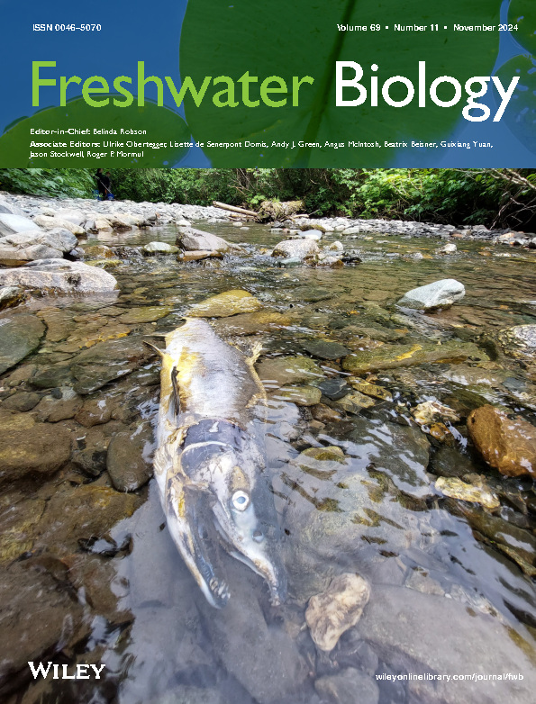
Samuel, W. T., L. E. Yancy, E. G. Hinkle, and J. A. Falke. 2024. Validating morphometrics as a nonlethal tool to determine Arctic Grayling sex. North American Journal of Fisheries Management 44:70-78. DOI
Fitzgerald, K. A., J. R. Bellmore, J. B. Fellman, M. L. H. Cheng, N. Boyles-Muehleck, C. E. Delbecq, and J. A. Falke. 2024. Juvenile coho salmon growth differences track biennial pink salmon spawning patterns. Freshwater Biology. DOI
Delbecq, C., J. B. Fellman, J. R. Bellmore, E. J. Whitney, E. Hood, K. Fitzgerald, and J. A. Falke. 2024. Seasonal patterns in riverine carbon form and export from a temperate forested watershed in Southeast Alaska. Biogeochemistry. DOI
Cathcart, C. N., J. A. Falke, J. Fox, R. Henszey, and K. Lininger. 2024. Multiscale processes drive formation of logjam habitats and use by juvenile Chinook salmon across a boreal stream network in Alaska. River Research and Applications. DOI
Fitzgerald, K.A., and Falke, J. 2024. Juvenile coho salmon growth differences track biennial pink salmon spawning patterns: U.S. Geological Survey data release, ScienceBase DOI
Falke, J.A. and J.D. Paul. 2024. Spatial and tabular datasets supporting the “Freshwater Habitat Potential for Chinook Salmon in the Yukon and Kuskokwim River Basins, Alaska” Project. U.S. Geological Survey data release, ScienceBase DOI
Falke, J.A., and J.D. Paul. 2024. Code to support “Chinook Salmon Freshwater Habitat Potential Modeling and Mapping for the Yukon and Kuskokwim River Basins in Alaska”. 2024. Version 1.0.0. U.S. Geological Survey software release, GitHub DOI
Delbecq, C.E., Falke, J.A., and Whitney, E.J. 2024. Riverine carbon form and flow data from a temperate forested watershed in Southeast Alaska (2021). U. S. Geological Survey data release, ScienceBase DOI
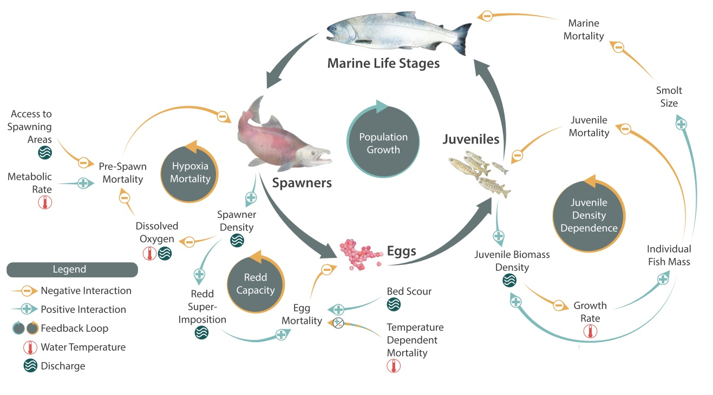
Torvinen, E. S., J. A. Falke, C. D. Arp, B. M. Jones, M. S. Whitman, and C. E. Zimmerman. 2023. Lake trout (Salvelinus namaycush) otoliths indicate effects of climate and lake morphology on growth patterns in Arctic lakes. Ecology of Freshwater Fish 32:166-180. DOI
Sergeant, C. J., J. R. Bellmore, R. A. Bellmore, J. A. Falke, F. J. Mueter, and P. A. H. Westley. 2023. Hypoxia vulnerability in the salmon watersheds of Southeast Alaska. Sci Total Environ 896:165247. DOI
Sergeant, C. J. and Falke, J. 2023. Data describing “Hypoxia Vulnerability in the Salmon Watersheds of Southeast Alaska”. U.S. Geological Survey data release, ScienceBase DOI
Meyer, B. E., M. S. Wipfli, E. R. Schoen, D. J. Rinella, and J. A. Falke. 2023. Landscape characteristics influence projected growth rates of stream‐resident juvenile salmon in the face of climate change in the Kenai River watershed, south‐central Alaska. Transactions of the American Fisheries Society 152:169-186. DOI
Leppi, J. C., D. J. Rinella, M. S. Wipfli, A. K. Liljedahl, A. C. Seitz, and J. A. Falke. 2023. Climate Change Risks to Freshwater Subsistence Fisheries in Arctic Alaska: Insights and Uncertainty from Broad Whitefish. Fisheries 48:295-306. DOI
Fitzgerald, K. A., J. R. Bellmore, J. B. Fellman, M. L. H. Cheng, **C. E. Delbecq*, and J. A. Falke**. 2023. Stream hydrology and a pulse subsidy shape patterns of fish foraging. Journal of Animal Ecology 92:2386-2398. DOI
Fitzgerald, K.A, and Falke, J. 2023. Data to support “Stream hydrology and a pulse subsidy shape patterns of fish foraging”. U.S. Geological Survey data release, ScienceBase DOI
Campbell, M. A., M. C. Hale, C. S. Jalbert, K. Dunker, A. J. Sepulveda, J. A. Lopez, J. A. Falke, and P. A. H. Westley. 2023. Genomics reveal the origins and current structure of a genetically depauperate freshwater species in its introduced Alaskan range. Evolutionary Applications 16:1119-1134. DOI
Bellmore, J. R., C. J. Sergeant, R. A. Bellmore, J. A. Falke, and J. B. Fellman. 2023. Modeling coho salmon (Oncorhynchus kisutch) population response to streamflow and water temperature extremes. Canadian Journal of Fisheries and Aquatic Sciences 80:243-260. DOI
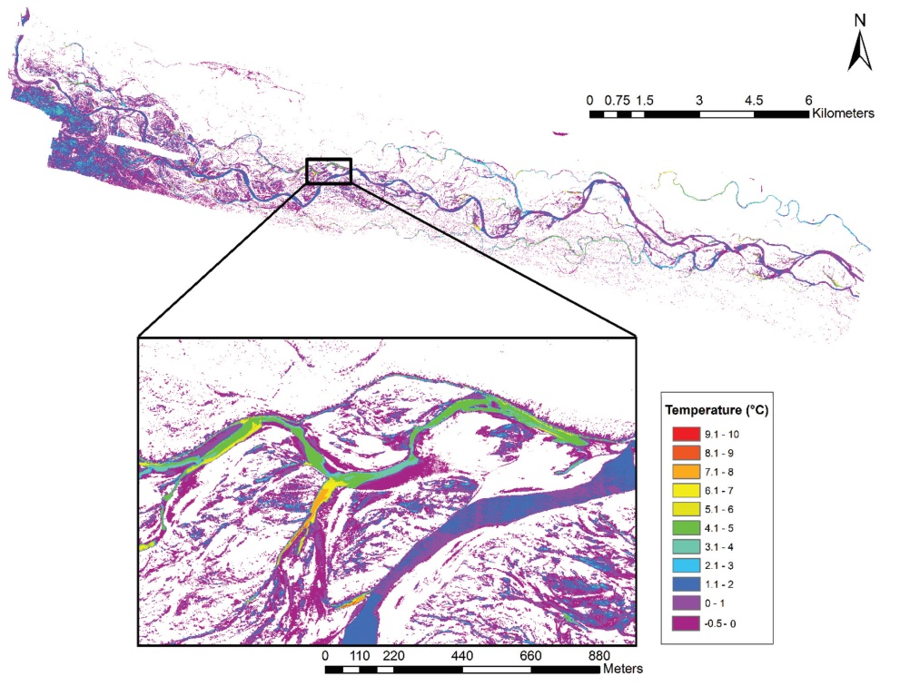
Walther, E. J., M. S. Zimmerman, J. A. Falke, and P. A. H. Westley. 2022. Species distributions and the recognition of risk in restoration planning: A case study of salmonid fishes. Ecological Applications 32:e2701. DOI
Lynch, A. J., B. J. E. Myers, J. P. Wong, C. Chu, R. W. Tingley, J. A. Falke, T. J. Kwak, C. P. Paukert, and T. J. Krabbenhoft. 2022. Reducing uncertainty in climate change responses of inland fishes: A decision‐path approach. Conservation Science and Practice 4. DOI
Leppi, J. C., J. A. Falke, D. J. Rinella, M. S. Wipfli, A. C. Seitz, and M. S. Whitman. 2022. Landscape geomorphology and local‐riverine features influence Broad Whitefish (Coregonus nasus) spawning habitat suitability in Arctic Alaska. Ecology of Freshwater Fish 31:622-639. DOI
Arthur, D.E., J.A. Falke, B.J. Blain-Roth, and T.M. Sutton. 2022. Alaskan Yelloweye Rockfish Fecundity Revealed through an Automated Egg Count and Digital Imagery Method. North American Journal of Fisheries Management 42:828-838. DOI
Von Biela, V., C. J. Sergeant, M. Carey, Z. Liller, C. Russell, Westley, C. Zimmerman. 2022. Premature mortality Alaska’s Pacific Salmon during record heat and drought in 2019. Fisheries 47:157-168. DOI
Clawson, C.M., Falke, J.A., Rose, J., Prakash, A., Martin, A.E., and L.L. Bailey. 2022. High-resolution remote sensing and multistate occupancy estimation identify drivers of spawning site selection in fall chum salmon (Oncorhynchus keta) across a sub-Arctic riverscape. Canadian Journal of Fisheries and Aquatic Sciences 79:380-394. DOI
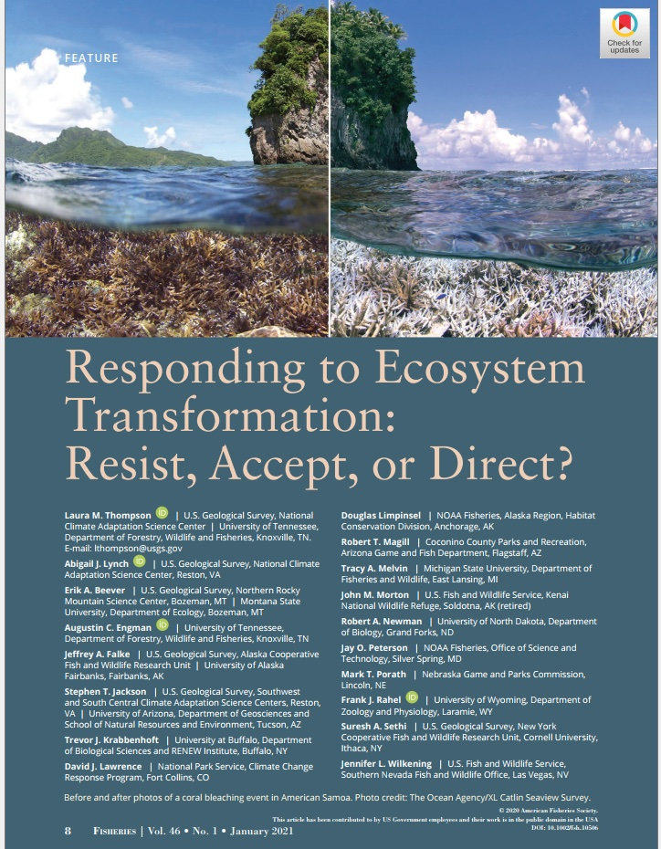
Williamson, E. R., and C. J. Sergeant. 2021. Independent validation of downscaled climate estimates from a coastal Alaska watershed using local historical weather journals. PeerJ 9:e12055. DOI
Hinkle, E., and Ford, N. B. 2021. Reproductive traits of North American Cajun Dwarf Crayfish (Cambarellus shufeldtii) from the Neches River National Wildlife Refuge. The Southwestern Naturalist, 65:56-60. DOI
Paukert, C.P., Olden, J.D., Brashears, D., Chambers, R.C., Chu, C., Daly, M., Dibble, K. Falke, J., Isaak, D., Jacobson, P., Jensen, O.P., Lynch, A.J., and D. Munroe. 2021. Climate change effects on North American fish and fisheries: a summary of the science and moving forward with adaptation. Fisheries 46:449-464. DOI
Stratton, M.E., Finkle, H., Falke, J.A., and P.A.H. Westley. 2021. Assessing potential stock structure of adult Coho Salmon (Oncorhynchus kisutch) in a small Alaska watershed: Quantifying run timing, spawning locations, and holding areas with radio telemetry. North American Journal of Fisheries Management 41:1423-1435. DOI
Jalbert, C., Falke J.A., Lopez, J.A., Dunker, K.J., Sepulveda, A.J., and P.A.H. Westley. 2021. Vulnerability of Pacific salmon to invasion of northern pike (Esox lucius) in Southcentral Alaska. PLoS ONE 16(7): e0254097. DOI
Borg, B.L., Arthur, S.M., Falke, J.A., and L.R. Prugh. 2021. Spatially explicit dynamics of wolf sightings in Denali National Park. Arctic 74:51-66. DOI
Thompson, L. M., A. J. Lynch, E. A. Beever, A. C. Engman, J. A. Falke, S. T. Jackson, T. J. Krabbenhoft, D. J. Lawrence, D. Limpinsel, R. T. Magill, T. A. Melvin, J. M. Morton, R. A. Newman, J. Peterson, M. T. Porath, F. J. Rahel, S. A. Sethi, J. L. Wilkening. 2021. When is resistance futile? Resisting, accepting, or directing ecosystem transformation. Fisheries 46:8-21. DOI
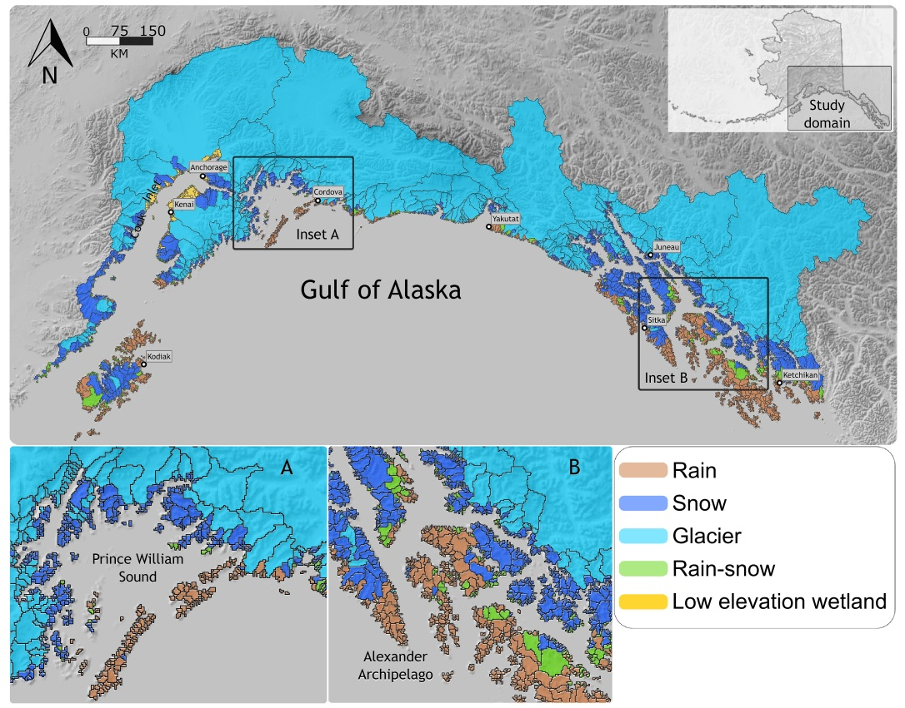
Sergeant, C.J., Falke, J.A., Bellmore, R.A., Bellmore, J.R., and R.L. Crumley. 2020. A classification of streamflow patterns across the coastal Gulf of Alaska. Water Resources Research 56:e2019WR026127. DOI
Shaftel, R., Mauger, S., Falke, J., Rinella, D., Davis, J., and L. Jones. 2020. Thermal diversity of salmon streams in the Matanuska-Susitna Basin, Alaska. Journal of the American Water Resources Association 56:630-646. DOI
Courtney, K.R., Falke, J.A., Cox, M.K., and J. Nichols. 2020. Energetic status of Alaskan Chinook Salmon: interpopulation comparisons and predictive modeling using bioelectrical impedance analysis. North American Journal of Fisheries Management 40:209-224. DOI
Krabbenhoft, T., Myers, B., Wong, J., Chu, C., Tingley, R., Falke, J., Kwak, T., Paukert, C., and A. Lynch. 2020. FiCli, the Fish and Climate Change Database, informs climate adaptation and management for freshwater fishes. Scientific Data 7:124. DOI
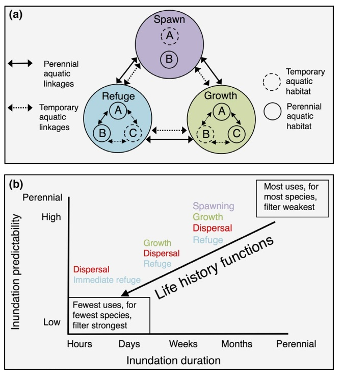
Falke, J.A., Bailey, L.T., Fraley, K.M., Lunde, M.J., and A.D. Gryska. 2019. Energetic status and bioelectrical impedance modeling of Arctic grayling Thymallus arcticus in interior Alaska rivers. Environmental Biology of Fishes 102:1337-1349. DOI
Heim, K.C., McMahon, T.E., Calle, L., Wipfli, M.S., and J.A. Falke. 2019. A general model of temporary aquatic habitat use: Water phenology as a life history filter. Fish and Fisheries 20:802-816. DOI
Falke, J.A., Huntsman, B.M., and E.R. Schoen. 2019. Climatic variation drives growth potential of juvenile Chinook Salmon along a subarctic boreal riverscape. Pages 57-82 in R.M. Hughes and D. Infante, editors. Advances in understanding landscape influences on freshwater habitats and biological assemblages. American Fisheries Society, Symposium 90, Bethesda, Maryland.
Huntsman, B.M. and J. A. Falke. 2019. Lateral connectivity and growth conditions influence juvenile Chinook salmon habitat selection within a sub-Arctic riverscape. Freshwater Biology 64:443-446. DOI
Sparks, M.M., Falke, J.A., Westley, P.A.H., Adkison, M.D., Bartz, K., Quinn, T.P., Schindler, D.E., and D. Young. 2019. Influences of spawning timing, water temperature, and climatic warming on early life history phenology in western Alaska sockeye salmon. Canadian Journal of Fisheries and Aquatic Sciences 76:123-135. DOI
Tibbles, M., Falke, J.A., Mahoney, A.R., Robards, M.D., and A.C. Seitz. 2018. An InSAR habitat suitability model to identify overwinter conditions for coregonine whitefishes in Arctic lagoons. Transactions of the American Fisheries Society 147:1167-1178.DOI
Matter, A.N., Falke, J.A., López, J.A., and J.W. Savereide. 2018. A rapid assessment method to estimate the distribution of juvenile Chinook salmon using eDNA and occupancy estimation. North American Journal of Fisheries Management 38:223-236. DOI
Fraley, K.M., Falke, J.A., McPhee, M.V., and A. Prakash. 2018. Rainbow trout movement behavior and habitat occupancy are influenced by sex and Pacific salmon presence in an Alaska river system. Canadian Journal of Fisheries and Aquatic Sciences 75:525-537. DOI
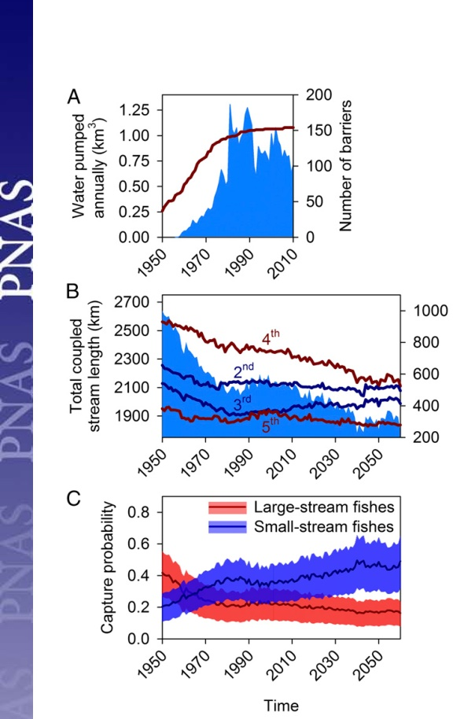
Sparks, M.M., Westley, P.A.H., Falke, J.A., and T.P. Quinn. 2017. Thermal adaptation and phenotypic plasticity in a warming world: insights from common garden experiments on Alaskan sockeye salmon. Global Change Biology 23:5203-5227. DOI
Perkin, J.S., Gido, K.B., Falke, J.A., Fausch, K.D., Crockett, H., Johnson, E.R., and J. Sanderson. 2017. Groundwater pumping shrinks Great Plains stream fish assemblages. Proceedings of the National Academy of Sciences. 114:7373-7378. DOI
Huntsman, B.M., Falke, J.A., Savereide, J.W., and K.E. Bennett. 2017. The role of density-dependent and –independent processes in spawning habitat selection by salmon in an Arctic boreal stream network. PLoS ONE 12(5): e0177467. DOI
Myers, B.E., Lynch, A.J., Bunnell, D.B., Chu, C., Falke, J.A., Kovach, R.P., Krabbenhoft, T.J., Kwak, T.J., and C.P. Paukert. 2017. Global synthesis of the projected and documented effects of climate change on inland fishes. Reviews in Fish Biology and Fisheries 27:339-361. DOI
McGarvey, D. J., Falke, J. A., Li, H. W., and J. L. Li. 2017. Fish assemblages. Pages 321-353. In: Methods in Stream Ecology, 3rd Edition. Edited by F. R. Hauer and G. A. Lamberti. Academic Press. DOI
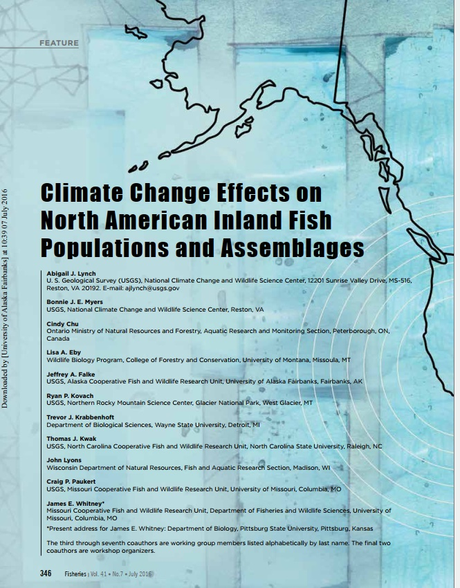
Fraley, K. M., Falke, J. A., Yanusz, R., and S. Ivey. 2016. Seasonal movements and habitat use of potamodromous Rainbow Trout across a complex Alaska riverscape. Transactions of the American Fisheries Society 145:1077-1092. DOI
Lynch, A. J., Myers, B. J. E., Chu, C., Eby, L., Falke, J. A., Kovach, R. P., Krabbenhoft, T. J., Kwak, T. J., Lyons, J., Paukery, C. P., Whitney, J., and D. C. Fulton. 2016. Climate change effects on North American inland fish populations, assemblages, and aquatic communities. Fisheries 41:346-361. DOI
Falke, J. A., Dunham, J. B., Hockman-Wert, D., and R. Pahl. 2016. A simple prioritization tool to diagnose impairment of stream temperature for coldwater fishes in the Great Basin. North American Journal of Fisheries Management 36:147-160. DOI
Flitcroft, R.L., Falke, J.A., Reeves, G.H., Hessburg, P.F., McNyset, K.M., and L.E. Benda. 2016. Wildfire may increase habitat quality for spring Chinook salmon in the Wenatchee River subbasin, WA, USA. Forest Ecology and Management 359:126-140. DOI
Heim, K. C., Wipfli, M.S., Whitman, M., Arp, C., Adams, J., and J.A. Falke. 2015. Environmental correlates of Arctic grayling seasonal movement on the Arctic Coastal Plain, Alaska. Environmental Biology of Fishes 99-49-65.
Falke, J. A., McNyset, K. M., Flitcroft, R. M., Dunham, J. B., and G. H. Reeves. 2015. Climate change and vulnerability of bull trout (Salvelinus confluentus) in a fire-prone landscape. Canadian Journal of Fisheries and Aquatic Sciences 72:304-318.
Sloat, M.R., Fraser, D.J., Dunham, J.B., Falke, J.A., Jordan, C.E., McMillan, J.R., and H. Ohms. 2014. Ecological and evolutionary patterns of freshwater maturation in Pacific and Atlantic salmonines. Reviews in Fish Biology and Fisheries 24:689-707.
Isaak, D. J., E. E. Peterson, J. M. Ver Hoef, S. J. Wenger, J. A. Falke, C. E. Torgersen, C. Sowder, E. A. Steel, M. J. Fortin, C. E. Jordan, A. S. Reusch, N. Som, and P. Monestiez. 2014. Applications of spatial statistical models to stream data. WIREs Water DOI
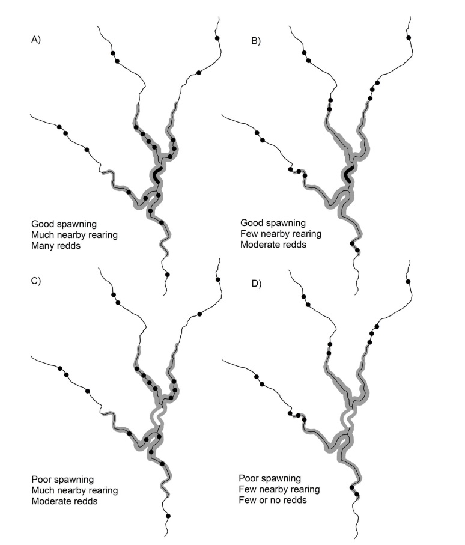
Falke, J. A., Dunham, J. B., McNyset, K. M., Jordan, C. E., and G. H. Reeves. 2013. Habitat complementation, ecological neighborhoods, and local factors predict the distribution and abundance of spawning steelhead trout (Oncorhynchus mykiss) in a large river network. PLoS ONE 8(11):e79232.
Peterson, E. E., Ver Hoef, J. M., Isaak, D. J., Falke, J. A., Fortin, M., Jordan, C. E., McNyset, K., Montestiez, P., Ruesch, A. S., Sengupta, A., Som, N., Steel, A., Theobald, D. M., Torgersen, C. E., and S. J. Wenger. 2013. Modeling dendritic ecological networks in space: an integrated network perspective. Ecology Letters 16:707-719.
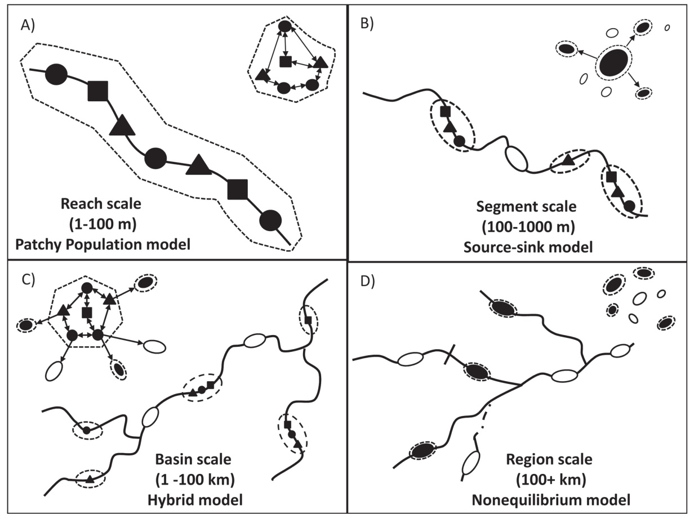
Falke, J. A., Bailey, L. L., Bestgen, K.R., and K. D. Fausch. 2012. Colonization and extinction in dynamic habitats: an occupancy approach for an assemblage of fishes in a Great Plains river. Ecology 93:858-867.
Falke, J. A., Fausch, K. D., Magelky, R., Squires, A., Durnford, D., Riley, L. and R. Oad. 2011. Ecological futures for stream fishes along an intermittent Great Plains riverscape affected by drought and groundwater withdrawal for irrigation. Ecohydrology 4:682-697.
Falke, J. A., Fausch, K. D., Bestgen, K. R., and L. L. Bailey. 2010. Spawning phenology and habitat use in a Great Plains stream fish assemblage: an occupancy estimation approach. Canadian Journal of Fisheries and Aquatic Sciences 67:1942-1956.
Falke, J. A., Bestgen, K. R., and K. D. Fausch. 2010. Streamflow reductions and habitat drying affect growth, survival, and recruitment of brassy minnow Hybognathus hankinsoni across a Great Plains riverscape. Transactions of the American Fisheries Society 139:1566-1583.
Falke, J. A., and K. D. Fausch. 2010. From metapopulations to metacommunities: linking theory with empirical observations of the spatial population dynamics of stream fishes. Pages 207-233. In: Community ecology of stream fishes: concepts, approaches and techniques. Edited by K. B. Gido and D. A. Jackson. American Fisheries Society Special Publication 73.
Gido, K. B., Schaefer, J., and J. A. Falke. 2009. Convergence of fish communities from the littoral zone of reservoirs. Freshwater Biology 54:1163-1177.
Dodds, W. K., Wilson, K. C., Rehmeier, R. L., Knight, G. L., Harper, S. W., Falke, J. A., Dalgleish, H. J., and K. N. Bertrand. 2008. Comparing ecosystem goods and services provided by restored and native lands. BioScience 58:837-846.
Falke, J. A., and K. B. Gido. 2006. Effects of reservoir connectivity on stream fish assemblages in the Great Plains. Canadian Journal of Fisheries and Aquatic Sciences 63:480-493.
Falke, J. A., and K. B. Gido. 2006. Spatial effects of reservoirs on fish assemblages in Great Plains streams in Kansas, U.S.A. River Research and Applications 22:55-68.
Gido, K. B., Falke, J. A., Oakes, R. M., and K. Hase. 2006. Fish-habitat relationships across spatial scales in prairie streams. In: Influences of landscape on stream habitat and biological communities. Edited by Hughes, R., Seelbach, P., and Wang, L. American Fisheries Society Special Publication 48.
Oakes, R. M., Gido, K. B., Falke, J. A., Olden, J. D., and B. L. Brock. 2005. Predictive modeling of stream fish assemblages in the Great Plains, USA. Ecology of Freshwater Fish 14:361-374.